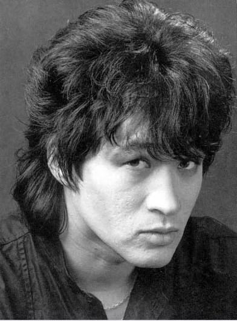
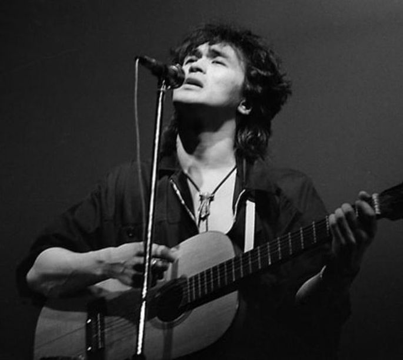
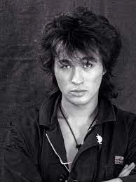

Биография
Место рождения и годы жизни
Виктор Робертович Цой родился в СССР 21 июня 1962 года в городе Ленинград, а погиб 15 августа 1990 года.
Ранние годы
Родился 21 июня 1962 года в Ленинграде. Он был единственным ребёнком в семье инженера корейского происхождения Роберта Максимовича Цоя и преподавательницы физкультуры Валентины Васильевны, русской по национальности. Всё своё детство музыкант провёл в родном городе, в окрестностях Московского парка Победы; Цой родился в располагающемся внутри парка роддоме на Кузнецовской улице. Его семья до 1990-х годов жила в примечательном «генеральском доме» на углу Московского проспекта и улицы Бассейной.
Тогда Виктор учился в близлежащей школе на улице Фрунзе, где работала его мать. В 1973 году родители Цоя развелись, но через год повторно вступили в брак.
В 1974—1977 годах Виктор посещал среднюю художественную школу.
Музыка
В конце 1970-х годов Виктор Цой, с подачи одного из приятелей Максима Пашкова, познакомился с Андреем Пановым, в гостях у которого впоследствии познакомился и с Алексеем Рыбиным. В то время Рыбин выступал с хард-роковой группой «Пилигримы», а Цой играл на бас-гитаре в ещё существовавшей группе «Палата № 6» (всего она существовала пять лет). Между ними началось тесное общение. По воспоминаниям музыкантов, Цой в юности был очень зажатым; играл на бас-гитаре, но своих текстов не писал. Андрею Панову и его компании, с которой Цой тогда виделся каждый день, всё же удалось уговорить его начать писать собственные тексты.
Виктор Цой и Алексей Рыбин в составе панк-группы Андрея Панова под названием «Автоматические удовлетворители» в 1981 году ездили в Москву и играли панк-рок-металл на подпольных концертах Артемия Троицкого, что особенно сблизило двух молодых музыкантов. Хотя исполненная в Москве первая песня Цоя — «Вася любит диско» — никого не впечатлила, он продолжил писать тексты для собственных песен и впоследствии написал текст песни «Мои друзья». Она стала его третьей по счёту и первой широко известной песней, в то время являясь даже его своеобразной «визитной карточкой». На одном из концертов песня привлекла внимание Артемия Троицкого и настолько его впечатлила, что он рассказывал о ней многим музыкантам, в том числе и Борису Гребенщикову; тот, однако, не придал словам Артемия большого значения. Знакомство Цоя и Бориса Гребенщикова произошло тогда, когда его группа — «Аквариум» — возвращалась с одного из квартирных концертов в Петергофе; тогда он и услышал песню «Мои друзья», поразившую его.
Постепенно компания Андрея Панова перестала интересовать Цоя и Рыбина, а в итоге и вовсе стала им неприятна; они сблизились с Михаилом «Майком» Науменко и Борисом Гребенщиковым, став так называемыми «новыми романтиками». По мнению многих людей, знавших Цоя, именно Михаил Науменко, популярность которого в то время была значительной, стал для него первым «гуру», а когда Цой достиг определённого уровня в музыке, Михаил «передал его Борису». Виктор показывал Михаилу все свои новые песни и говорил о близости его и своих взглядов на жизнь.
Вскоре Олега Валинского призвали в армию, а группа «Гарин и Гиперболоиды» сменила название на «Кино» и весной 1982 года приступила к записи своего дебютного альбома. Песни записывались на студии Андрея Тропилло в Доме юного техника под руководством Бориса Гребенщикова. В записи принимали участие музыканты из группы «Аквариум»; с ними же «Кино» дала свой первый электрический концерт в «Ленинградском рок-клубе». Всё выступление шло под драм-машину, а под песню «Когда-то ты был битником» из-за кулис на сцену выскочили Борис Гребенщиков, Майк и Игорь «Панкер» Гудков. К лету альбом был полностью завершён. Продолжительность его звучания составила 45 минут, откуда и появилось название «45», однако незадолго до выпуска из окончательного варианта была убрана песня «Я — асфальт» продолжительностью в 3 минуты (её, однако, можно найти в переиздании альбома от 1996 года, где она прилагается в качестве бонус-трека).
Запись получила некоторое распространение: о группе заговорили, начались квартирные концерты в Москве и Ленинграде. Вместе с будущим барабанщиком группы «Зоопарк» — Валерием Кириловым — осенью этого же года группа «Кино» записала в студии Андрея Кускова несколько песен, в том числе «Весна» и «Последний герой», вошедшие в сборник «Неизвестные песни Виктора Цоя» (всего вышло четыре издания этого сборника). Тогда запись была забракована и распространения не получила, так как Цой забрал ленту себе.
На телевидении Цой дебютировал в октябре 1989 года в программе «Взгляд», о чём рассказано в книге «„Взгляд“— битлы перестройки». В ходе передачи музыкант не только пел (им были исполнены песни «Песня без слов» и «Невесёлая песня»), но и активно обсуждал все темы, которые поднимались во время программы. На вопрос ведущего о его отношении к кооперации, Цой, назвав своё отношение сложным, ответил, что «кооперация — дело очень нужное», а «единственная проблема — в том, что её упрекают все в спекуляции».
Смерть музыканта
Виктор Цой погиб в автокатастрофе 15 августа 1990 года на 35-м километре автомобильной дороги Р-126 (ныне — Р128) «Слока — Талси» в Тукумском районе Латвии (ныне — Семская волость Тукумского края), в нескольких десятках километров от столицы — Риги.
Пребывая в отпуске в Латвии (посёлок Плиеньциемс) после гастролей, Цой в 6 часов утра отправился порыбачить на небольшое озеро в лесу (возможно, Энгурес или Ридели). Рыбалка заняла 5 часов, и приблизительно в 11 часов утра музыкант отправился домой на своём автомобиле модели «Москвич-2141» (государственный номерной знак — «Я 68 32 ММ»). В это же время по той же трассе со скоростью 60-70 километров в час ехал автобус.
Похороны должны были пройти 19 августа 1990 года на Богословском кладбище Ленинграда. На ленинградском телевидении транслировалось видеообращение, в котором участники группы «Кино» обратились к поклонникам с просьбой не посещать предстоящие похороны; тем не менее проститься с Цоем пришло около 30 тысяч человек. В последний момент место похорон было изменено, чтобы позволить присутствовать на них только родным музыканта. 19 августа Цоя похоронили на Богословском кладбище в Ленинграде.
Смерть музыканта стала шоком для множества его поклонников; около сорока фанатов покончили жизнь самоубийством.
Самые известные произведения
- Группа Крови
- Звезда по имени Солнце
- Мы ждем перемен
- Кончится лето
- Кукушка
- Видели Ночь
- Война
- Спокойная ночь
- Последний герой
Абсолютный шедевр и главный цоевский хит всех времен и народов. Песня известна настолько, что даже музыканты Metallica сделали небольшую импровизацию во время своего концерта в Лужниках, чем немало удивили поклонников. Знакомую мелодию и слова тут же подхватил весь стадион. Вот, что значит, истинная народная любовь. Можно сказать уверенно: эту песню знают даже те, кто никогда и не увлекался творчеством «Кино».
Один из двух главных хитов Виктора Цоя на все времена. Впервые эта вещь прозвучала в начальных титрах фильма «Игла» и, поговаривают, была специально написана и записана для этого фильма. Мало, кто предполагал, что она даст название целому альбому. Простые и понятные слова актуальны до сих пор.
Песню, в которой Цой, по собственному признанию, пел исключительно о внутренних переменах, сегодня подняли на щит современные революционеры всех мастей и «борцы с режимом». Благодаря этой песне я в свое время впервые и познакомился с группой «Кино». А услышал и увидел ее, естественно, в фильме «Асса».
Пожалуй, самая пронзительная песня Цоя, учитывая контекст. И одна из самых хитовых. Лично я и сегодня не могу ее спокойно слушать. Эту композицию тоже любят радиостанции, ди-джеи и коллеги Цоя по рок-н-ролльному (и не только) цеху. Песню исполняли «Кукрыниксы», Вячеслав Бутусов и другие музыканты. Но, пожалуй, самый интересный кавер на нее сделал Леонид Агутин – в стиле рэггей, с обилием духовых инструментов. Жаль только, что во время ее исполнения на КИНОпробах в 2018 году певец забыл слова.
Песня-пророчество, ставшая известной уже после смерти Цоя. Кто только ее не перепевал: Земфира, Би-2, ДДТ. Даже Полина Гагарина предложила свое видение этой композиции, полностью изменив изначальный посыл и вложив собственные эмоции в цоевские слова. В общем, песня давно зажила своей жизнью и судя, по всему, надолго переживет своего автора. Но я предпочитаю каноническую версию.
Еще одна легендарная нетленка, повествующая о внутренней борьбе лирического героя. Меняются общественные устройства, одно поколение сменяется другим, а война «между землей и небом» будет продолжаться всегда. Очень простые и при этом очень точные и емкие образы попали в самое яблочко.
Одна из самых мрачных и берущих за душу цоевских вещей, слова которой в нашей стране еще долго будут актуальны. А от финального соло Каспаряна непроизвольно начинает щемить сердце и подкатывать комок к горлу. Пожалуй лучшее оригинальное исполнение этой песни можно увидеть в фильме Алексея Учителя «Рок». Много лет спустя ее регулярно играла на своих концертах группа «Алиса».
Песня была написана в начале 80-х и впоследствии перезаписывалась четыре раза, пока не обрела свою каноническую форму на одноименном альбоме-сборнике. Лирический герой песни – сам автор, во многом описавшие собственные ощущения и настроение, которые оказались созвучны многим молодым людям.